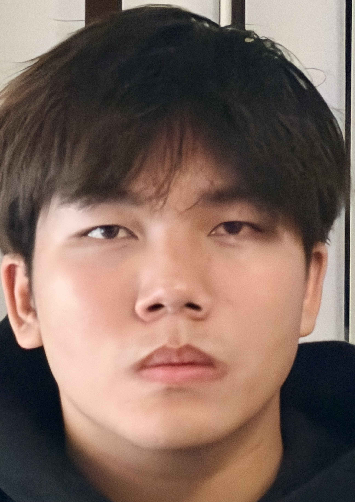
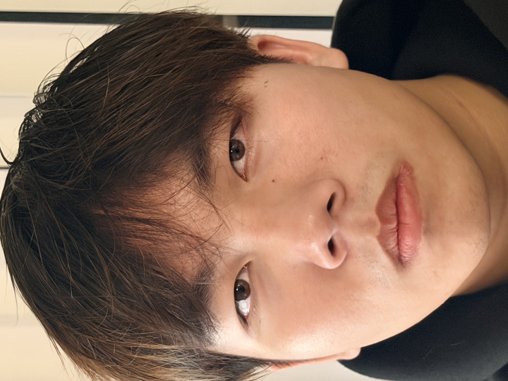
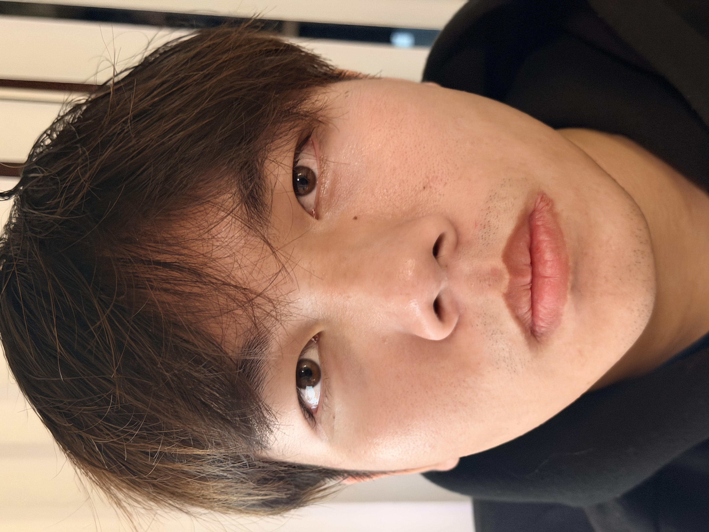
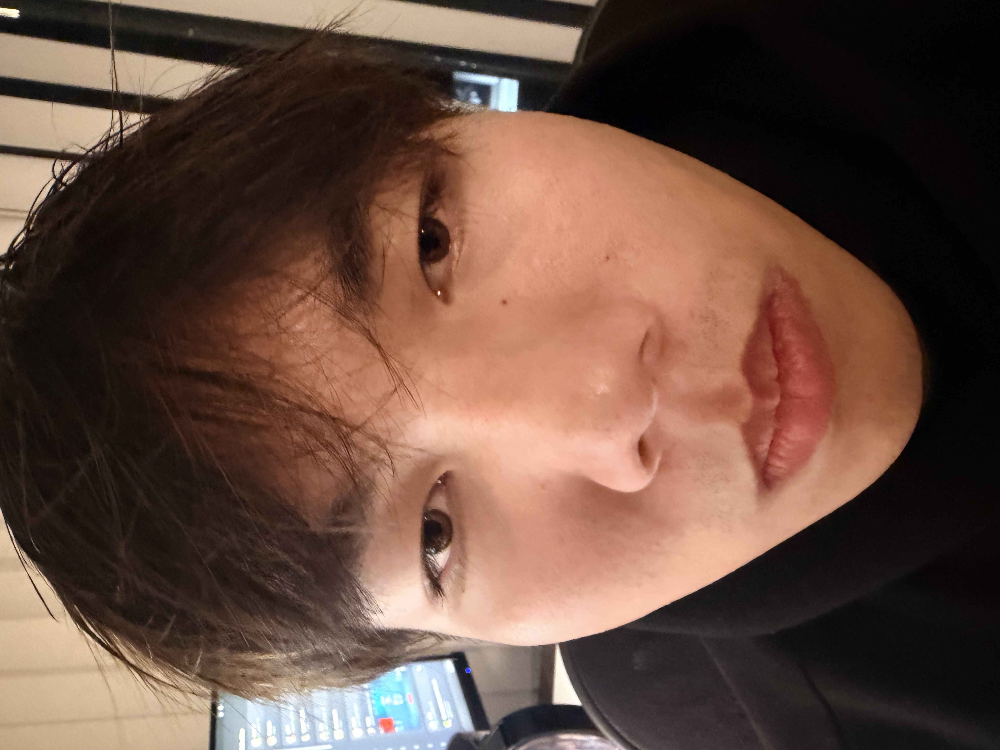
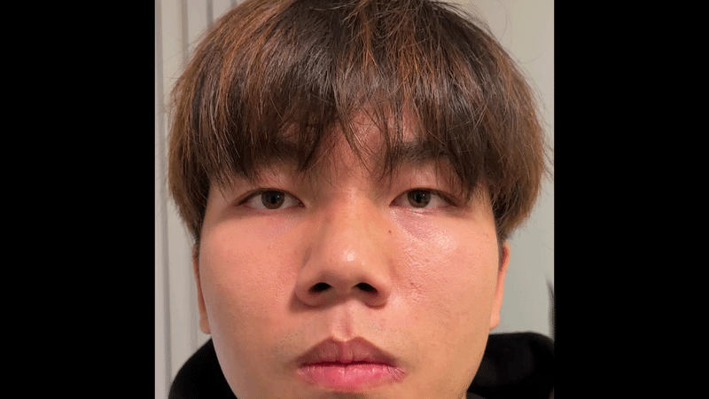
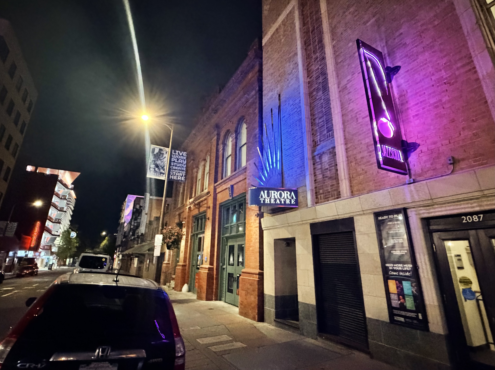
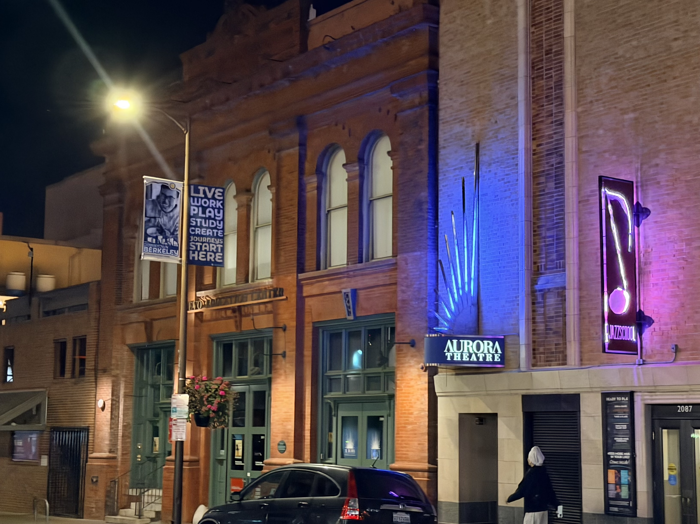

Portraits





Part 1: Portraits ("Right" vs "Wrong")
Close-up selfies exaggerate perspective because closer features (like the nose)appear larger relative to the rest of the face. Stepping back and using a longer focal length (here mimiced by real switches to a telephoto lens and just digital zoom as well) reduces that distortion and makes a portrait that doesn't distort features as much proportionally.
Part 3: The Dolly Zoom
The dolly zoom keeps the subject size constant by moving the camera while changing focal length (zooming in) the opposite way. The background compresses or stretches giving a vertigo/motion sickness type of effect.
Building


Part 2: Architectural Perspective Compression
Zooming in flattens perspective, while moving closer keeps perspective cues and shows more separation due to size distortion. The the closer-up photo looks less flat than the zoomed one.